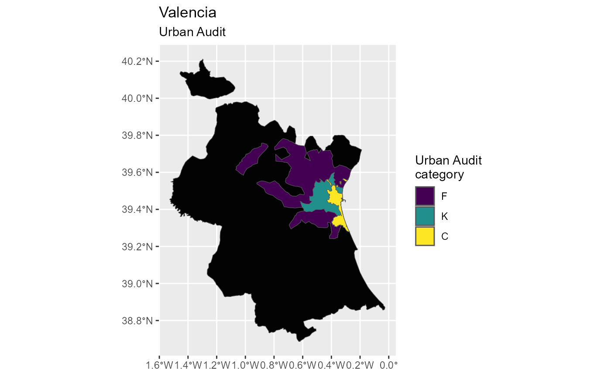

Download individual shapefiles of units. Unlike gisco_get_countries(),
gisco_get_nuts() or gisco_get_urban_audit(), that downloads a full
dataset and applies filters, gisco_get_units() downloads a single
shapefile for each unit.
Select the unit type to be downloaded. Accepted values are
"nuts", "countries" or "urban_audit".
Unit ID to be downloaded. See Details.
Controls the output of the function. Possible values are "sf"
or "df". See Value and Details.
Release year of the file. One
of "2001", "2006", "2010", "2013", "2016" or "2020".
projection of the map: 4-digit EPSG code. One of:
"4258": ETRS89
"4326": WGS84
"3035": ETRS89 / ETRS-LAEA
"3857": Pseudo-Mercator
A logical whether to do caching. Default is TRUE. See
About caching.
A logical whether to update cache. Default is FALSE.
When set to TRUE it would force a fresh download of the source
.geojson file.
A path to a cache directory. See About caching.
Logical, displays information. Useful for debugging,
default is FALSE.
Resolution of the geospatial data. One of
"60": 1:60million
"20": 1:20million
"10": 1:10million
"03": 1:3million
"01": 1:1million
Type of geometry to be returned: "RG", for POLYGON and
"LB" for POINT.
A sf object on mode = "sf" or a data frame on mode = "df".
The function can return a data frame on mode = "df" or a sf
object on mode = "sf".
In order to see the available unit ids with the required
combination of spatialtype, year, first run the function on "df"
mode. Once that you get the data frame you can select the required ids
on the unit parameter.
On mode = "df" the only relevant parameters are spatialtype, year.
Country-level files would be renamed on your cache_dir
to avoid naming conflicts with NUTS-0 datasets.
Please check the download and usage provisions on gisco_attributions().
You can set your cache_dir with gisco_set_cache_dir().
Sometimes cached files may be corrupt. On that case, try re-downloading
the data setting update_cache = TRUE.
If you experience any problem on download, try to download the
corresponding .geojson file by any other method and save it on your
cache_dir. Use the option verbose = TRUE for debugging the API query.
For a complete list of files available check gisco_db.
Other political:
gisco_bulk_download(),
gisco_get_coastallines(),
gisco_get_countries(),
gisco_get_lau(),
gisco_get_nuts(),
gisco_get_postalcodes(),
gisco_get_urban_audit()
# \donttest{
cities <- gisco_get_units(
id_giscoR = "urban_audit",
mode = "df",
year = "2020"
)
VAL <- cities[grep("Valencia", cities$URAU_NAME), ]
# Order from big to small
VAL <- VAL[order(as.double(VAL$AREA_SQM), decreasing = TRUE), ]
VAL.sf <- gisco_get_units(
id_giscoR = "urban_audit",
year = "2020",
unit = VAL$URAU_CODE
)
# Provincia
Provincia <-
gisco_get_units(
id_giscoR = "nuts",
unit = c("ES523"),
resolution = "01"
)
# Reorder
VAL.sf$URAU_CATG <- factor(VAL.sf$URAU_CATG, levels = c("F", "K", "C"))
# Plot
library(ggplot2)
ggplot(Provincia) +
geom_sf(fill = "gray1") +
geom_sf(data = VAL.sf, aes(fill = URAU_CATG)) +
scale_fill_viridis_d() +
labs(
title = "Valencia",
subtitle = "Urban Audit",
fill = "Urban Audit\ncategory"
)

# }